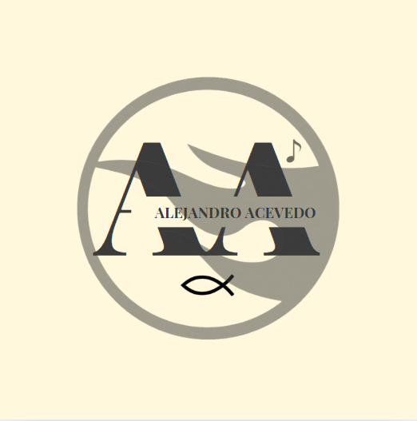

+1% life
+1% life
Logotipo

La doble A
- Son las siglas de mi primer nombre y apellido.
La llama del fondo
- Me representa ya que es una insignia característica de los hotwheels
especiales “Treasure Hunt”, los cuales no son nada comunes de encontrar, me identifico con esto
ya que tengo una conexión especial con los carritos Hot Wheels, además que me identifico con la
insignia al sentirme alguien que para nada es común y cuesta demasiado encontrar, ya que soy
una persona única.
Pescado Ichtus
- Elegí este símbolo ya que yo he venido a este mundo a anunciar las buenas
nuevas del evangelio y que Jesucristo es el hijo de Dios, es el único salvador y el único camino
hacia la verdad. Es un símbolo que simboliza mi fe en Cristo.
Corchea
- Simboliza mi lado artístico y conexión con la música la cual deja una marca en mi vida;
por otro lado, lo veo como un símbolo de que la vida es bella y efímera como lo puede ser el
sonido de una corchea.
Nombre en el centro:
- Lo veo como un recordatorio de que todo lo anterior, gira en torno a que
yo tenga y que se forme una identidad la cual se representa con mi nombre: Alejandro Acevedo.